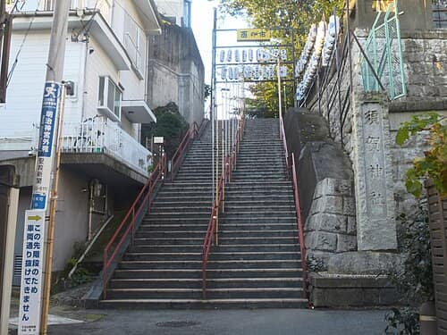

Must see
Photo: Wiiii · CC BY-SA 3.0
Edo-Tokyo Museum
Sumida-ku & Kōtō-ku · Sight
city history museum
Recommended by Time Out, The Japan Times +2
356 places here · Show all 488
Photo: Wiiii · CC BY-SA 3.0
Sumida-ku & Kōtō-ku · Sight
city history museum
Recommended by Time Out, The Japan Times +2
Photo: john w · CC BY 2.0
Chiyoda-ku · Sight
Edo Castle ruins, free admission
Recommended by Wikipedia, Go Tokyo +1
Photo: Wiiii · CC BY-SA 3.0
Taitō-ku · Sight
Honkan, Hōryū-ji Treasures gallery
Recommended by Wikipedia, Go Tokyo +1
Chūō-ku · Sight
Indo-Islamic facade, pipe organ
Recommended by Wikipedia, Go Tokyo +1
Shibuya-ku · Sight
crêpes, kawaii fashion
Recommended by Go Tokyo, Wikipedia +1

Must seePhoto: Hisagi · CC BY-SA 4.0
Shinjuku-ku · Sight
★ Anime & pop culture — Your Name. (Kimi no Na wa) — the film's final-
Recommended by Atlas Obscura, Nipponcom +1
tokyo-default — zoom 13: 16 labelled pins, 340 dots, 0 numbers on the map.